GLORY 109 steigt am Samstag, den 5. September 2026, in der RTM Stage in Rotterdam. Im Hauptkampf verteidigt Doppelchampion Chico Kwasi seinen Weltergewichts-WM-Titel gegen Teodor Hristov – die dritte Runde eines Duells, das aktuell 1:1 steht. Im Co-Main kehrt Schwergewichts-Legende Errol Zimmerman gegen Tariq Osaro zurück, und mit dem Freiburger Valentin Knau steht ein Kämpfer aus unserem eigenen Gym im Ring. Rotterdam liegt in unserer Zeitzone, das Event läuft also am Abend zur besten Sendezeit. GLORY überträgt international über DAZN; die genaue deutsche Übertragung stand zum Redaktionsschluss noch nicht fest.
Es gibt Kämpfe, die man ein drittes Mal sehen will – weil die ersten beiden keine echte Entscheidung gebracht haben. Genau das bekommen wir am Samstag, den 5. September 2026, bei GLORY 109 in der RTM Stage in Rotterdam. Chico Kwasi und Teodor Hristov haben sich zweimal getroffen, jeder hat einmal gewonnen, und diesmal liegt der Weltmeistertitel im Weltergewicht dazwischen. Für alle, die Kickboxen auf Weltniveau mögen, ist das einer der spannendsten Abende des Jahres.
Wir sind keine Wettagentur und kein Veranstalter, sondern eine Trainingshalle in Freiburg: das ExitAsia Gym, seit 2006, über 1000 Aktive im Monat. Solche Abende schauen wir mit Respekt vor dem Handwerk – und diesmal mit einem besonderen Grund, denn mit Valentin Knau steht ein Kämpfer aus unserem eigenen Umfeld auf der Karte. Hier bekommst du die komplette Kampfkarte, die wichtigsten Duelle im Detail, den Termin, die Ticket-Info und alles zur Übertragung. Alle Angaben sind Stand 24. Juli 2026.
Was ist GLORY 109 – und warum lohnt sich dieser Abend?
GLORY ist die weltweit führende Kickbox-Liga, vergleichbar mit dem, was die UFC im MMA ist. Bei GLORY 109 kommen drei Geschichten zusammen, und keine davon braucht künstliche Aufregung.
Erstens der Titel-Entscheider. Kwasi gegen Hristov ist eine Trilogie: ein Sieg für jeden, jetzt der dritte Akt mit dem Gürtel als Einsatz. So etwas schreibt der Sport nicht oft.
Zweitens die Rückkehr einer Legende. Im Co-Main steht mit Errol „The Bonecrusher“ Zimmerman ein Mann im Ring, der schon vor 15 Jahren gegen die Größten des Sports gekämpft hat – gegen einen jungen, körperlich überlegenen Gegner.
Drittens ein Kämpfer von nebenan. Valentin Knau aus dem ExitAsia Freiburg bekommt seine Bühne auf der größten Kickbox-Plattform Europas. Für uns ist das kein Randfakt, sondern der Grund, warum dieser Abend für Freiburg besonders ist. Dazu ein praktischer Bonus: Rotterdam liegt in unserer Zeitzone – das Event läuft am Abend, nicht wie US-Kämpfe mitten in der Nacht.
Wer kämpft im Hauptkampf? Chico Kwasi gegen Teodor Hristov
Der Hauptkampf ist ein Weltergewichts-Weltmeisterschaftskampf und der dritte Teil einer echten Rivalität auf Augenhöhe. Hier trifft ein außergewöhnlich langer, technischer Champion auf einen jungen Herausforderer, der genau diesen Champion schon einmal geschlagen hat. Genau diese Spannung macht den Kampf so gut.
Chico „Luffy“ Kwasi (46-6-2, 23 K. o.) ist einer der besten Kickboxer seiner Generation und aktuell etwas ganz Seltenes: Er hält gleichzeitig den GLORY-Titel im Welter- und im Mittelgewicht. Damit ist er erst der zweite Doppelchampion der GLORY-Geschichte nach Alex Pereira – eine echte Ausnahmeleistung. Mit 1,91 m ist der Niederländer mit surinamischen Wurzeln für seine Klasse ungewöhnlich groß, boxt klug hinter einer langen Führhand und hat die Ruhe, enge Kämpfe über die Meisterschaftsrunden für sich zu entscheiden. Genau so holte er bei GLORY 107 im April 2026 durch eine hauchdünne Entscheidung seinen zweiten Titel.
Teodor Hristov aus dem bulgarischen Varna ist mit 25 Jahren der jüngere, aber längst kein Neuling. Er begann mit neun Jahren mit dem Kampfsport, wurde mit 16 Profi und hat sich in der GLORY mit Siegen über namhafte Gegner wie Murthel Groenhart und Jay Overmeer nach oben gearbeitet. Sein Kapital ist ein enormes Arbeitspensum: hoher Druck, viele Schläge, ein Tempo, das schon größere Namen zermürbt hat. Genau damit hat er Kwasi bei Collision 8 im Dezember 2025 überrascht und nach Punkten geschlagen. Seine Bilanz liegt bei rund 20 Siegen und 5 Niederlagen – die genaue Zahl schwankt je nach Quelle leicht.
Die Vorgeschichte ist reizvoll ausgeglichen: Ihr erstes Duell bei GLORY 98 (Februar 2025) gewann Kwasi einstimmig und verteidigte seinen Titel. Das zweite, bei Collision 8 (Dezember 2025), holte sich Hristov in einem Turnierkampf ohne Titel – ebenfalls einstimmig. Steht also 1:1. GLORY 109 ist der Entscheider, und für Hristov wäre ein Sieg ein Meilenstein für das bulgarische Kickboxen.
Tale of the Tape
| Chico Kwasi | Statistik | Teodor Hristov |
|---|---|---|
| Champion (Welter + Mittel) | Status | Herausforderer |
| 46-6-2 (23 K. o.) | Bilanz | ca. 20-5 (8 K. o.) |
| 28 | Alter | 25 |
| 1,91 m | Größe | 1,86 m |
| Niederlande / Suriname | Herkunft | Bulgarien |
| Langer Techniker, kluges Boxen | Stil | Druck, hohes Schlagvolumen |
| Head-to-Head: 1 : 1 · GLORY 109 ist der Entscheider | ||
Schlüssel zum Sieg
Kwasi setzt sich durch, wenn …
- er seine Größe und Reichweite nutzt und Hristov mit der langen Führhand auf Distanz hält,
- er die Runden ruhig kontrolliert und den Kampf zu einer technischen Aufgabe macht,
- er wie im ersten Duell das Tempo diktiert, statt sich in Hristovs Nahkampf ziehen zu lassen.
Hristov setzt sich durch, wenn …
- er von Beginn an sein hohes Tempo durchdrückt und Kwasi keine Sekunde Ruhe lässt,
- er die Distanz schließt und den Champion mit Schlagvolumen unter Dauerstress setzt,
- er den Kampf so gestaltet wie bei Collision 8, als er Kwasi bereits einmal bezwungen hat.
Dieser Kampf steht zu Recht 1:1. Kwasi bringt Titel-Erfahrung, Größe und die Ruhe für enge Runden mit; Hristov hat bewiesen, dass sein Druck genau diesen Champion aus dem Rhythmus bringen kann. Zwei Ausnahmekönner auf Augenhöhe – genau deshalb ist dieser Abend so besonders.
Schau dir die ersten beiden Kapitel selbst an
Das Schöne an einer Trilogie: Du kannst dir vor GLORY 109 selbst ein Bild machen. GLORY hat beide bisherigen Duelle offiziell auf YouTube. Klick auf ein Video, um es zu laden (erst dann wird eine Verbindung zu YouTube aufgebaut).
Das Co-Main: Errol Zimmerman gegen Tariq Osaro
Wenn du Schwergewichte mit echter Wucht magst, ist das dein Kampf: Errol „The Bonecrusher“ Zimmerman gegen Tariq „Cookie“ Osaro. GLORY bewirbt das Duell mit zusammen 62 K.-o.-Siegen – und das ist tatsächlich keine Übertreibung. Es ist ein Aufeinandertreffen zweier Generationen.
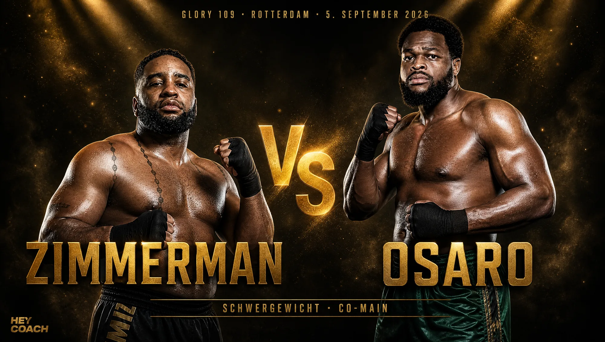
Errol Zimmerman ist eine lebende Verbindung zur goldenen K-1-Ära. Der 40-jährige Niederländer mit curaçaoischen Wurzeln kämpft seit rund 25 Jahren und hat auf seinem Weg Namen wie Rico Verhoeven, Jérôme Le Banner und Stefan Leko geschlagen. 2008 gewann er den K-1 World Grand Prix – für viele der wichtigste Schwergewichtstitel jener Jahre. Nach einem Jahrzehnt Pause kehrte er 2025 in die GLORY zurück und zeigte mit einem Erstrunden-K. o. gegen Alex Simon, dass die berühmte rechte Hand immer noch da ist. Vor so einer Karriere kann man nur den Hut ziehen.
Tariq Osaro ist das andere Extrem – und ein hochtalentierter dazu. Der 30-jährige Niederländer mit nigerianischen Wurzeln kam erst 2018 über Umwege vom Fußball zum Kickboxen und war wenige Jahre später bereits GLORY-Interims-Champion im Schwergewicht. Mit 1,98 m und rund 130 kg ist er die vielleicht imposanteste Erscheinung der Division; er trainiert im renommierten Mike’s Gym in Amsterdam an der Seite von Badr Hari und Jamal Ben Saddik. Sein größtes Pfund: eine schwere rechte Hand und ein Jab, der, wie er selbst sagt, „zu einer richtig gefährlichen Waffe geworden ist“.
Es ist ein klassisches Duell Erfahrung gegen Physis: Zimmermans granitenes Kinn und sein Ring-IQ gegen Osaros Größe, Reichweite und Athletik. Beide bringen echte K.-o.-Gefahr mit – deshalb ist die wahrscheinlichste Frage nicht ob, sondern wann es kracht. Wir freuen uns auf diesen Kampf und wünschen beiden, dass sie gesund und stark aus dem Ring gehen.
Zimmermans Comeback im Video
Wie viel Wucht in Zimmermans rechter Hand steckt, hat er bei seiner GLORY-Rückkehr gezeigt: ein Erstrunden-K. o. GLORY hat den Kampf offiziell online.
Ein Kämpfer aus Freiburg auf der GLORY-Bühne: Valentin Knau
Und jetzt der Teil, der uns am meisten am Herzen liegt. Auf der GLORY-109-Karte steht mit Valentin „El Vallo“ Knau ein Kämpfer, der aus dem ExitAsia in Freiburg kommt – also aus genau der Welt, aus der auch Hey Coach stammt. In der Superfight Series trifft der Weltergewichtler auf Mohammed Hamdi aus Spanien. Für uns läuft dieser Kampf nicht unter „ferner liefen“ – er ist der Grund, warum wir bei diesem Abend besonders mitfiebern.
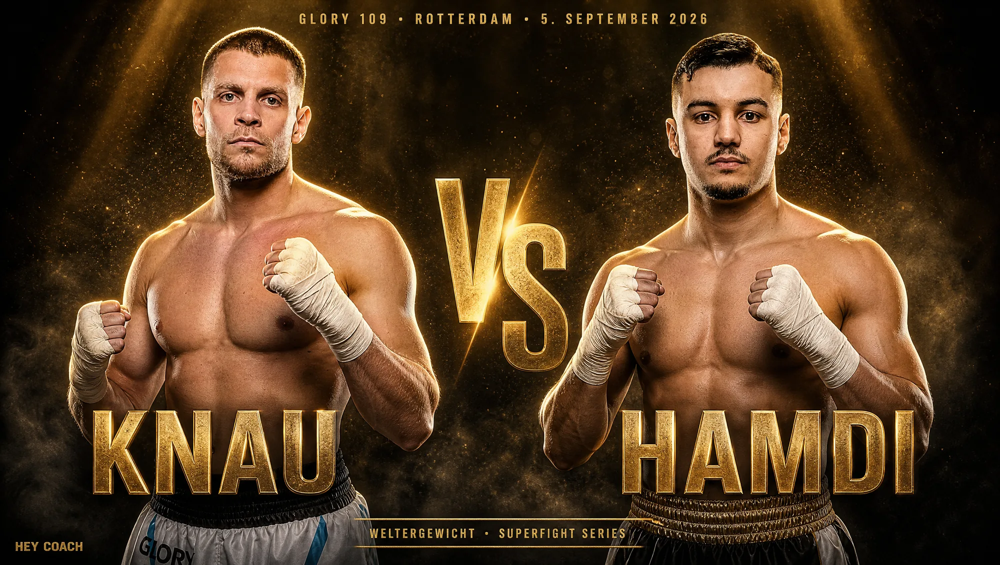
Valentins Weg ist genau die Art Geschichte, die den Kampfsport ausmacht. 2023 holte er sich den ISKA-Semi-Pro-Deutschland-Titel im Super-Mittelgewicht (K-1-Regeln). Er ist ein ausgesprochener K.-o.-Schläger – bei einem Turnierabend in Hamburg beendete er zwei Kämpfe in derselben Nacht in unter einer Minute. Und dann kam der große Schritt.
Sein letzter Kampf war zugleich sein GLORY-Debüt: Bei GLORY 107 am 25. April 2026 – ebenfalls in Rotterdam – trat er als Ersatzmann gegen den ungeschlagenen Antonio Krajinović an. Valentin ließ sich davon nicht beeindrucken: Er schickte seinen Gegner in der zweiten Runde zweimal zu Boden und gewann einstimmig nach Punkten. Ein Debüt, wie man es sich nur wünschen kann. Laut GLORY steht seine Karrierebilanz bei starken 43 Siegen und 3 Niederlagen mit 20 K. o. – eine Zahl, die zeigt, mit welcher Konstanz er arbeitet.
Eine schöne Randnotiz für Kenner: Ausgerechnet Krajinović, den Valentin im April geschlagen hat, steht bei GLORY 109 ebenfalls wieder auf der Karte. Der Kickbox-Zirkus ist eng – und Freiburg ist mittendrin. Wir drücken Valentin die Daumen und freuen uns, seinen Weg zu verfolgen.
Valentin im Ring
Wie sein Stil aussieht, siehst du hier in einem kompletten Kampf – klick zum Laden:
Wie sieht die komplette Kampfkarte von GLORY 109 aus?
Nein, es sind nicht nur drei Kämpfe – GLORY 109 bringt eine volle Karte mit rund einem Dutzend Duellen mit. Rund um Hauptkampf, Co-Main und unseren Freiburger baut GLORY den Abend vor allem um die Welterweight Proving Grounds: vier Qualifikationskämpfe, deren Sieger sich für das Acht-Mann-Turnier im Weltergewicht zum Jahresende empfehlen. Dazu kommen zwei weitere Kämpfe der Hauptkarte und eine Reihe von Duellen der Superfight Series. Wir gehen die ganze Karte durch – jeder dieser Kämpfer hat sich seinen Platz hier verdient.
Die weitere Hauptkarte
Jimmy Livinus gegen Beybulat Isaev (Halbschwergewicht). Ein reizvolles Duell aus Erfahrung und Heimvorteil: Der Russe Beybulat Isaev bringt eine lange, finish-starke Bilanz mit, der Niederländer Jimmy Livinus kämpft vor eigenem Publikum. Für beide geht es darum, sich in einer prominenten Division zu positionieren.
Imad Hadar gegen Ulric Tiebe (Mittelgewicht). Routine gegen Aufbruch: Der Marokkaner Imad Hadar ist ein abgezockter Techniker, der junge Franzose Ulric Tiebe einer der spannendsten Prospects seiner Klasse. Genau solche Kämpfe zeigen, wo die nächste Generation steht.
Welterweight Proving Grounds: das Casting fürs große Turnier
Diese vier Kämpfe haben denselben Einsatz – ein Sieg bringt dich der Auslosung fürs Acht-Mann-Turnier näher. Entsprechend hungrig treten hier alle an.
- Antonio Krajinović gegen Michael Samperi. Für uns der Kampf mit dem größten Wiedererkennungswert: Krajinović ist genau der Gegner, den unser Valentin im April geschlagen hat, und er will sich zurückmelden – gegen den erfahrenen Italiener Michael Samperi eine harte Aufgabe.
- Dmitry Menshikov gegen Diaguely Camara. Zwei schlagkräftige Weltergewichtler mit hoher K.-o.-Quote. Wer hier die Distanz besser kontrolliert, macht einen großen Schritt Richtung Turnier.
- Don Sno gegen Jay Overmeer. Der Routinier Jay Overmeer hat schon gegen die halbe Division gekämpft und weiß, wie man solche Abende gewinnt – für Don Sno die Chance, sich gegen einen etablierten Namen zu beweisen.
- Figuereido Landman gegen Mohammed Boutasaa. Ein offenes Duell zweier ehrgeiziger Prospects, in dem beide zeigen wollen, dass sie ins Turnierfeld gehören.
Superfight Series: die Vorkämpfe
Neben Valentin Knau gegen Mohammed Hamdi stehen hier weitere Duelle, teils mit erfahrenen Namen. Die folgenden Bilanzen stammen von der offiziellen GLORY-Kampfkarte:
- Christian Baya gegen Anwar Ouled-Chaib. Baya wird von GLORY mit über 60 Siegen geführt – ein echter Veteran, der auf den deutlich jüngeren Anwar Ouled-Chaib trifft. Erfahrung gegen Frische.
- Vedat Hoduk gegen Nikola Todorovic. Hoduk gilt laut Kampfkarte als einer der härtesten Puncher des Abends; Todorovic bringt selbst eine finish-starke Bilanz mit. Das riecht nach Feuerwerk.
- Abdo Chahidi gegen Imran Ben Slama (Federgewicht). Ein erfahrener Routinier trifft auf einen fast makellosen Aufsteiger – ein klassisches Lehrmeister-gegen-Herausforderer-Duell in der leichtesten Klasse des Abends.
- Artiom Livadari gegen Fikri Sabri. Zwei ambitionierte Kämpfer, die sich auf der großen Bühne einen Namen machen wollen.
Und hier die komplette Karte auf einen Blick:
| Kampf | Gewichtsklasse | Einordnung |
|---|---|---|
| Kwasi (c) vs. Hristov (Main) | Weltergewicht | WM-Titel · Trilogie-Entscheider |
| Zimmerman vs. Osaro (Co-Main) | Schwergewicht | Legende gegen aufsteigende Kraft |
| Jimmy Livinus vs. Beybulat Isaev | Halbschwergewicht | Hauptkarte |
| Imad Hadar vs. Ulric Tiebe | Mittelgewicht | Hauptkarte |
| Antonio Krajinović vs. Michael Samperi | Weltergewicht | Proving Grounds · GP-Qualifikation |
| Dmitry Menshikov vs. Diaguely Camara | Weltergewicht | Proving Grounds · GP-Qualifikation |
| Don Sno vs. Jay Overmeer | Weltergewicht | Proving Grounds · GP-Qualifikation |
| Figuereido Landman vs. Mohammed Boutasaa | Weltergewicht | Proving Grounds · GP-Qualifikation |
| Valentin Knau vs. Mohammed Hamdi | Weltergewicht | Superfight Series · unser Freiburger |
| Christian Baya vs. Anwar Ouled-Chaib | Catchweight | Superfight Series |
| Vedat Hoduk vs. Nikola Todorovic | Catchweight | Superfight Series |
| Abdo Chahidi vs. Imran Ben Slama | Federgewicht | Superfight Series |
| Artiom Livadari vs. Fikri Sabri | Catchweight | Superfight Series |
Weitere Kämpfe im Bild
Auch die restlichen Kämpfe der Karte haben wir als Fight-Poster aufbereitet – so hast du die ganze GLORY 109 im Bild:
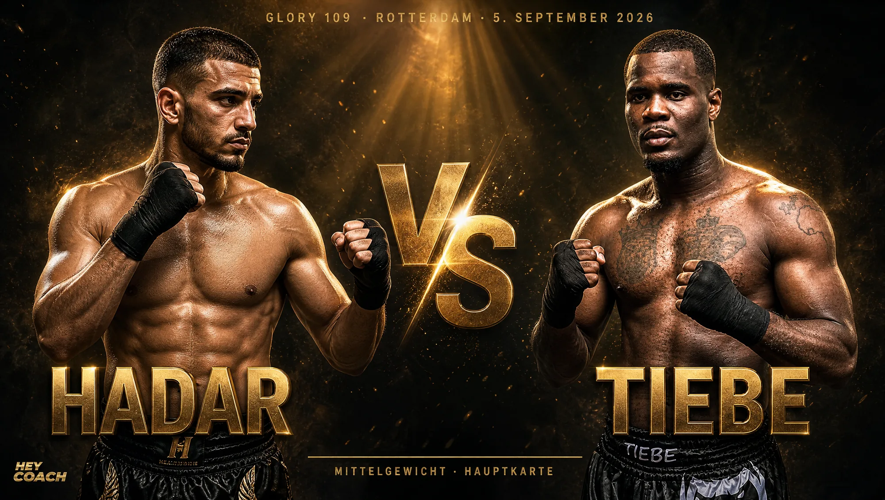
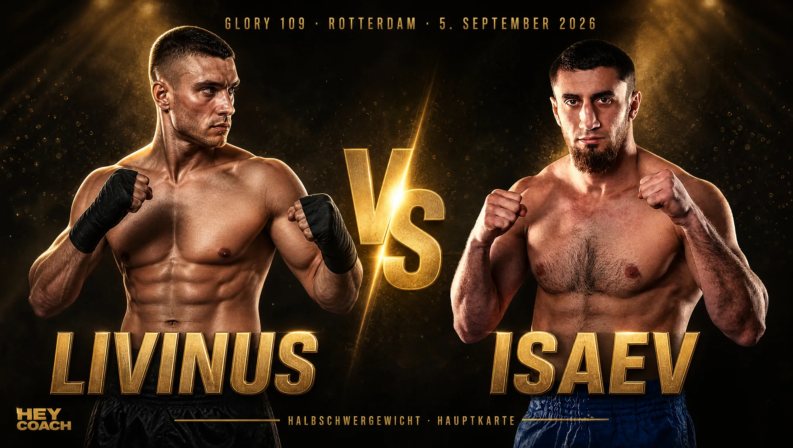
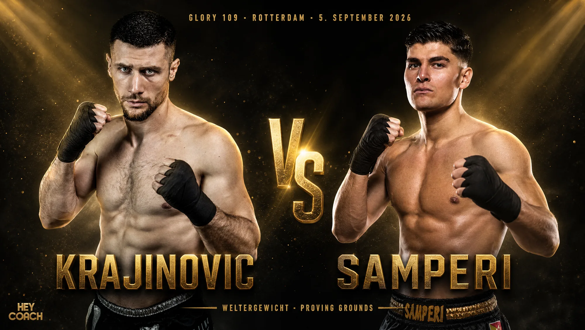
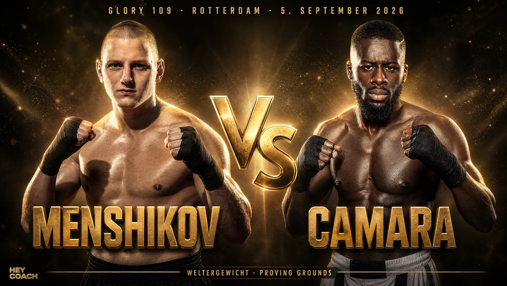
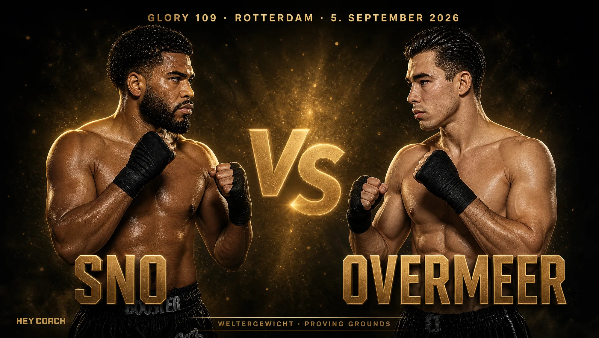
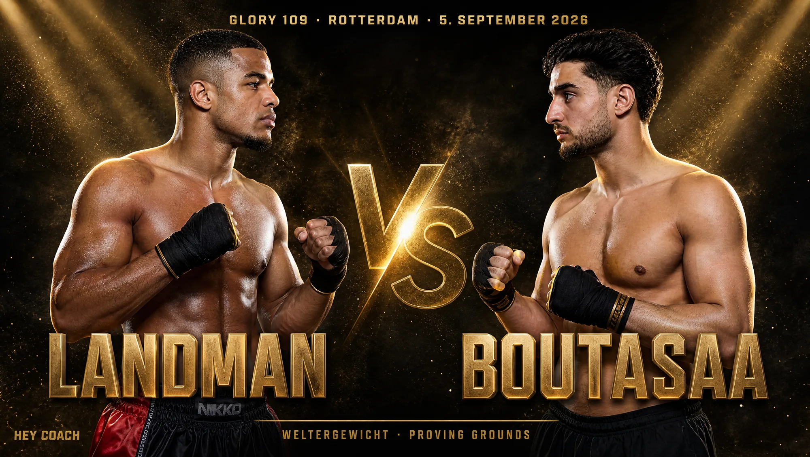
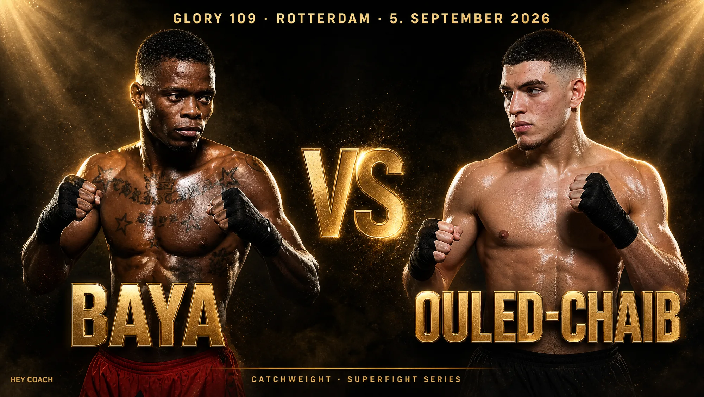
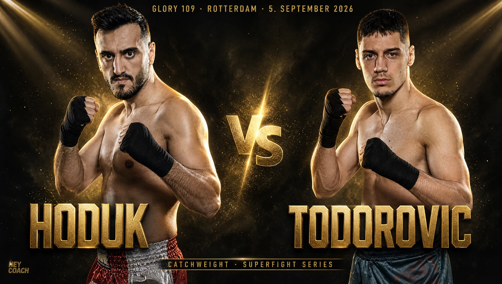
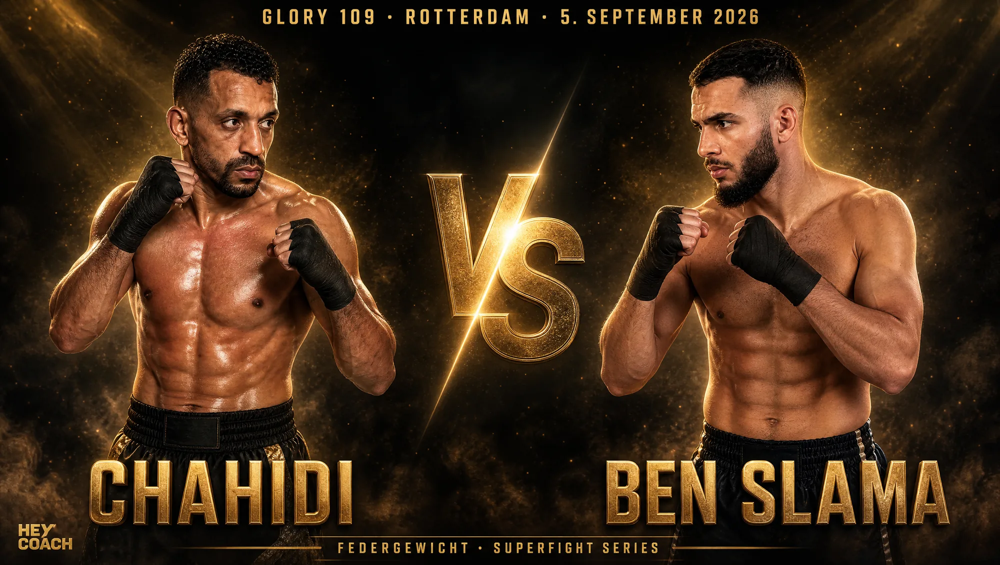
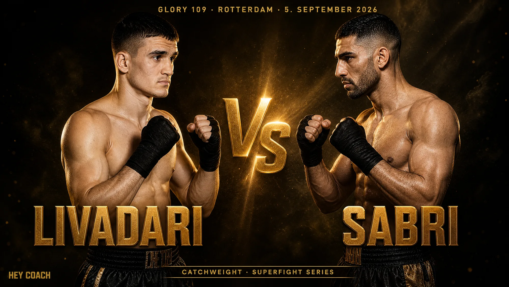
Die Fight-Poster sind KI-generierte Grafiken. GLORY weist darauf hin, dass der Karte bis zum Event noch Kämpfe hinzugefügt werden können – Aufstellung und Reihenfolge können sich also noch ändern. Die Bilanzen der Vorkämpfer stammen von der offiziellen GLORY-Kampfkarte und lassen sich nicht überall unabhängig prüfen.
Wo ist eigentlich Rico Verhoeven? Die neue Ära im Schwergewicht
Wer GLORY sagt, denkt oft zuerst an einen Namen: Rico Verhoeven, den langjährigen Schwergewichts-König. Deshalb die berechtigte Frage – kämpft er bei GLORY 109? Die klare Antwort: nein. Verhoeven hat den GLORY-Schwergewichtstitel im November 2025 abgegeben, nachdem er ihn über ein Jahrzehnt gehalten hatte, und sich 2026 dem Boxen zugewandt, wo er Ende Mai gegen den Weltklasse-Boxer Oleksandr Usyk antrat und unterlag. Ein Rücktritt vom Kampfsport ist damit ausdrücklich nicht verbunden – aber in der GLORY steht er derzeit nicht im Ring.
Das Schwergewicht hat seither einen neuen Champion: Mory Kromah setzte sich beim „Last Heavyweight Standing“-Turnier durch und verteidigt seinen Titel als Nächstes am 12. Dezember 2026 bei Collision 10 gegen Antonio Plazibat. Die Ära nach Verhoeven ist also offen wie lange nicht – und genau das macht Duelle wie Zimmerman gegen Osaro so wichtig.
Ein zweiter Name, nach dem oft gesucht wird, ist Bahram Rajabzadeh, „The Golden Wolf“. Auch er steht nicht auf der GLORY-109-Karte. Der Kämpfer startet für Aserbaidschan (geboren im Iran) und ist vor allem deutschen Fans ein Begriff, weil er mehrfach bei GLORY-Events in Deutschland aufgetreten ist – in Düsseldorf 2019 und in Essen 2023. Aktuell bewegt er sich rund um die Titelkämpfe im Halbschwer- und Schwergewicht, unabhängig vom Abend in Rotterdam.
Wann startet GLORY 109 in Deutschland? Termin und Übertragung
Die vielleicht beste Nachricht für alle in Deutschland, Österreich und der Schweiz: GLORY 109 ist ein europäischer Abendtermin. Rotterdam liegt in derselben Zeitzone wie wir, das Event läuft also am Samstagabend – die Vorkämpfe der Superfight Series am späteren Nachmittag, die Hauptkarte am Abend. Du musst dir keinen Wecker mitten in der Nacht stellen wie bei US-Events.
Termin, Übertragung & Tickets im Überblick
Wie kann ich GLORY 109 sehen und Tickets kaufen?
Übertragung: GLORY überträgt seine Events international über DAZN, das laut GLORY auch Deutschland, Österreich und die Schweiz abdeckt. Eine dedizierte „So schaust du GLORY 109“-Seite mit deutscher Startzeit und möglichem Pay-per-View-Preis hatte GLORY zum Redaktionsschluss (24. Juli 2026) noch nicht veröffentlicht. Unser ehrlicher Rat: Prüfe die genaue Übertragung ein paar Tage vor dem Event direkt auf glorykickboxing.com und in der DAZN-App. Wir aktualisieren diesen Abschnitt, sobald GLORY die Details bestätigt.
Tickets: Karten für die RTM Stage gibt es offiziell über tickets.glorykickboxing.com. Wenn du in der Nähe bist: Ein GLORY-Abend live ist eine andere Welt als der Stream – und mit Valentin Knau hast du diesmal einen guten Grund mehr, hinzufahren.
Kickboxen verstehen: Regeln, Gewichtsklassen und der Unterschied zu Muay Thai
Falls GLORY dein Einstieg in den Kampfsport ist, hier die wichtigsten Grundlagen in Kürze – damit du den Abend besser liest.
Die Regeln: GLORY kämpft im Ring nach Kickbox-Regeln (K-1-Stil). Erlaubt sind Fäuste und Tritte, dazu Knietechniken; im Gegensatz zum reinen Muay Thai gibt es nur begrenztes Clinchen und keine Ellbogen. Gekämpft wird über drei Runden, Titelkämpfe gehen über fünf. Gewonnen wird durch K. o., Abbruch oder nach Punkten.
Die Gewichtsklassen: Von Federgewicht über das Weltergewicht (bis 77 kg, die Klasse von Kwasi, Hristov und Knau) bis zum Schwergewicht (die Klasse von Zimmerman und Osaro). Je schwerer die Klasse, desto höher die K.-o.-Wahrscheinlichkeit – deshalb verspricht das Co-Main so viele Highlights.
Kickboxen oder Muay Thai? Die kurze Antwort: Kickboxen ist schnell, aufrecht und schlagbetont; Muay Thai („die Kunst der acht Gliedmaßen“) nutzt zusätzlich Ellbogen und intensives Clinch- und Kniespiel. Wir unterrichten beides – und wenn du tiefer einsteigen willst, haben wir dazu einen eigenen Vergleich geschrieben: Muay Thai vs. Kickboxen – was passt zu dir?
Der Hey Coach Take
Aus 20 Jahren in der Halle nehmen wir bei GLORY 109 vor allem eine Lehre mit: Der spektakuläre K. o. macht die Highlights, aber gewonnen werden Kämpfe fast immer über sauberes Handwerk: Reichweite, Rhythmus, Ausdauer, Wiederholung. Kwasi gegen Hristov ist dafür das perfekte Anschauungsmaterial: Der eine kontrolliert mit Größe und Ruhe, der andere überrollt mit Tempo. Und Valentins Weg von der Freiburger Halle bis nach Rotterdam zeigt, dass diese Grundlagen kein Talent-Geheimnis sind, sondern das Ergebnis von jahrelanger, geduldiger Arbeit.
Was das für dich als Kampfsportler bedeutet
Das Schöne am Zuschauen ist, dass du echte Prinzipien mitnehmen kannst – ganz ohne dass dir jemand verspricht, du wärst nach einem Kurs auf GLORY-Niveau. Drei davon lernst du als Einsteiger von Grund auf:
- Distanz schlägt Kraft. Kwasi gewinnt nicht, weil er am härtesten schlägt, sondern weil er die Distanz beherrscht. Distanzgefühl ist trainierbar – und das Erste, was du an der Pratze lernst.
- Der Low Kick ist unterschätzt. Im Kickboxen entscheiden oft die Tritte gegen den Oberschenkel ein Duell, lange bevor der große Schlag kommt. Eine saubere Technik schlägt rohe Wucht.
- Kondition trägt dich durch die Runden. Hristovs ganzes Spiel basiert auf Tempo über die volle Distanz. Ausdauer ist keine Nebensache, sondern die Basis, auf der Technik erst funktioniert.
Klar gesagt: Das sind Profis auf einer der größten Bühnen des Sports. Die Prinzipien dahinter – Distanz, saubere Technik, Kondition – lernst du als Anfänger in Freiburg oder online trotzdem von Grund auf.
Du willst diese Grundlagen selbst auf die Pratze bringen, statt nur zuzuschauen? Dann fang sauber an: Im Kickboxen-Komplettkurs baust du Schlagdistanz, Low Kicks, Timing und Kondition von null auf – und wenn dich Knie- und Clinch-Spiel reizt, ist der Muay-Thai-Komplettkurs der nächste Schritt.